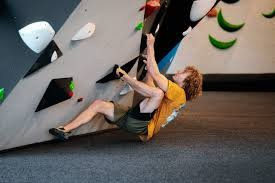
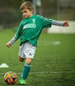

Klimmen is voor mij een combinatie van kracht, strategie en focus. Het vraagt zowel fysieke inspanning als mentale concentratie. Elke route is een nieuwe uitdaging waarbij je niet alleen je lichaam gebruikt, maar ook je vermogen om snel beslissingen te nemen. Dat is iets wat ik ook herken in programmeren: stap voor stap de juiste keuzes maken om tot een oplossing te komen.
Ik klim vaak in indoorhallen met vrienden. Daar draait het niet alleen om wie het hoogste geraakt, maar om elkaar te helpen en technieken te verbeteren. Die samenwerking en doorzetting neem ik mee in mijn studie en toekomstige werk als programmeur.

Naast klimmen speel ik al jaren voetbal. Het is een sport die mij leert samenwerken, communiceren en verantwoordelijkheid nemen. In een team moet je elkaars sterktes kennen en elkaar ondersteunen — iets wat ook in softwareontwikkeling van groot belang is.
Voetbal helpt me bovendien om stress te verminderen en gefocust te blijven. Door actief bezig te zijn kan ik mijn hoofd leegmaken, wat ervoor zorgt dat ik later met een frisse blik kan programmeren.

Mijn hobby’s houden me dus niet alleen fit, maar versterken ook mijn professionele eigenschappen. Ze leren me omgaan met uitdagingen, blijven doorgaan als iets moeilijk is en altijd het beste uit mezelf te halen.